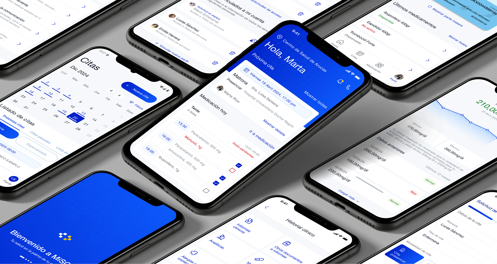
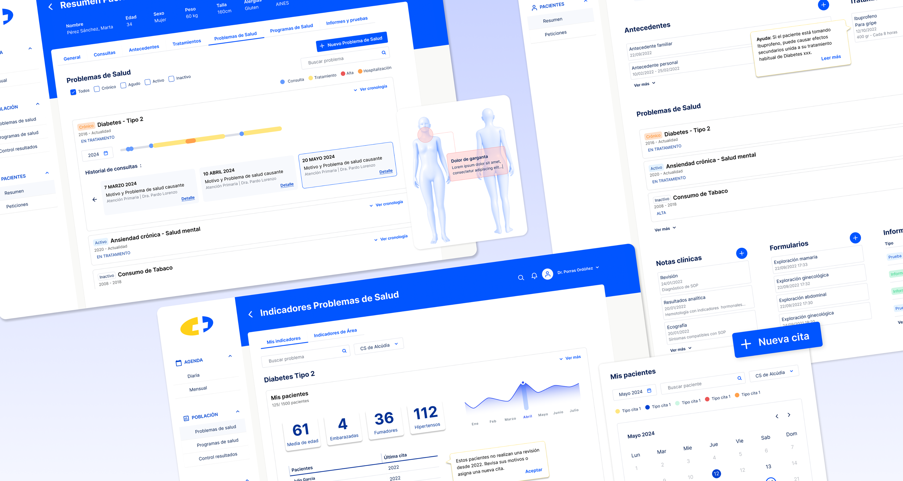

Designing for Health
- UX/UI Design
- User Research
- Product Architecture
- Public Sector
A series of projects at the intersection of design and public health — from internal management platforms to citizen-facing apps — each one tackling the complexity of healthcare systems with clarity, rigour and a focus on real user needs.

Across multiple public health projects, my work has spanned product architecture, interface design and user research. In 2023, I independently designed VIVAC, a comprehensive internal platform for managing Health Centres under Spain's Ministry of Foreign Affairs. I handled the full system design and coordinated directly with the development team, taking ownership of both the strategic and execution layers of the product.

In 2024, I joined the MiSCS project — the app for the Canary Islands Health Service — where I contributed to app architecture, wireframing and user research. The goal was to define a solid, operational product grounded in real user needs rather than assumptions. Later that same year, working on ib-Salut for the Balearic Islands health system, I focused on design and prototyping while exploring for the first time the integration of AI-driven proposals in a healthcare context, generating agile solutions adapted to the specific demands of the sector.